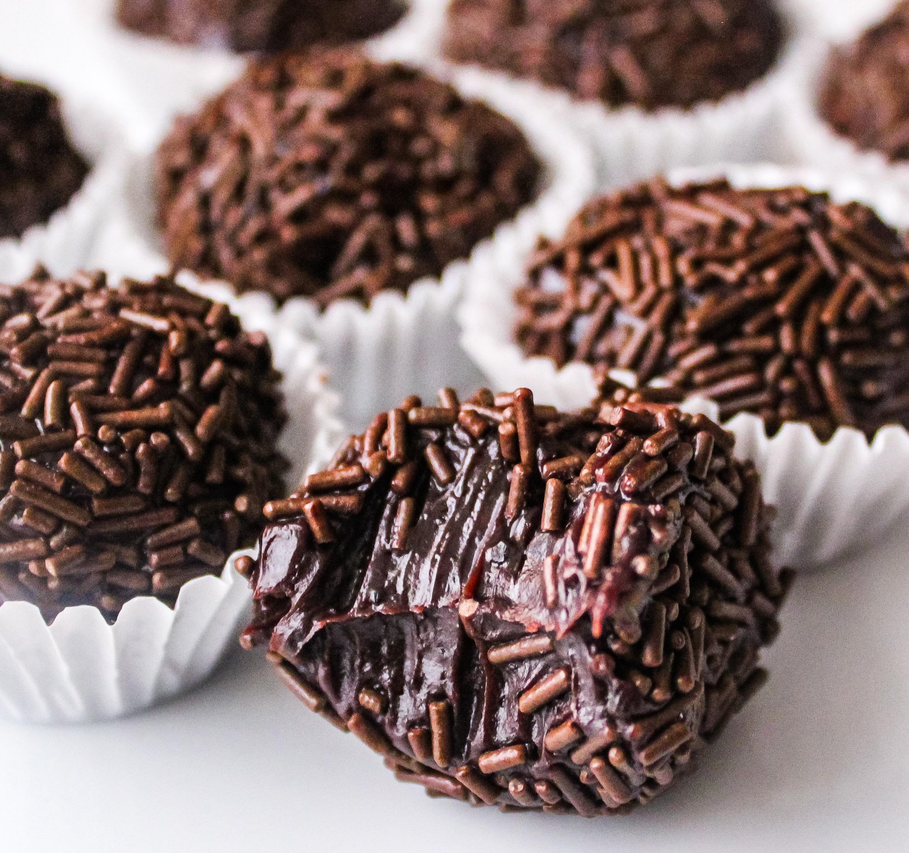

Brigadeiro

Brigadeiro is a great Brazilian dessert similar to bonbons that's extremely scrumptious and delicious. This sweet is loved in Brazil.
Ingredients
- 1 (14 ounce) can sweetened condensed milk
- 3 tablespoons unsweetened cocoa
- 1 tablespoon butter
- 1 cup chocolate sprinkle
Steps
- Combine condensed milk, cocoa, and butter in a medium saucepan over medium heat.
- Cook and stir until thickened, about 10 minutes.
- Remove from heat and let rest until mixture is cool enough to handle.
- Use your hands to shape into small balls and place on a serving plate.
- Roll the balls in chocolate sprinkles.